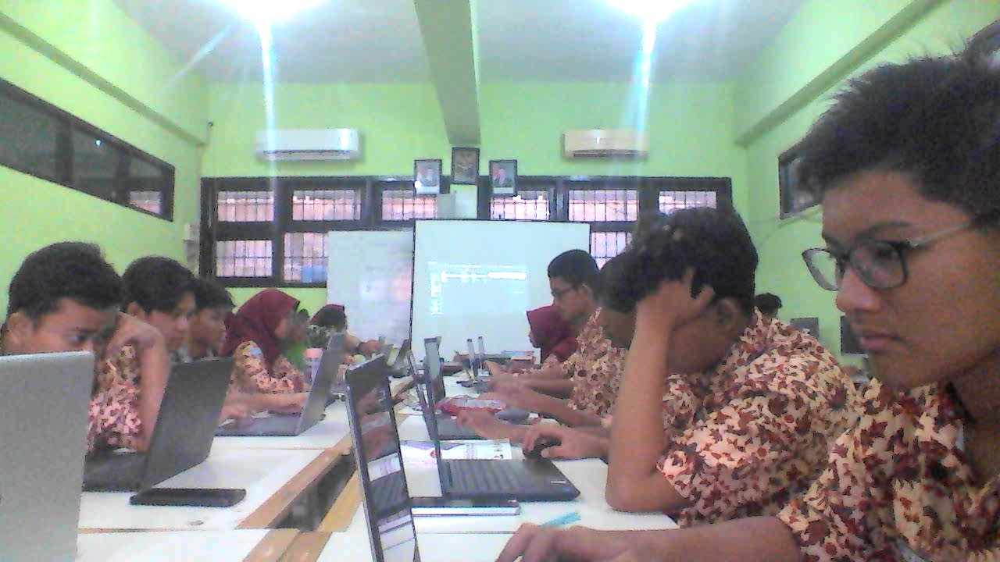

Profil
Galeri
Fasilitas
Prestasi
Kontak

Pengumuman
Jadwal libur sekolah
15 Januari - Libur Isra-Mir'aj
18-21 Februari - Libur awal puasa
16-25 Maret - Libur Idul-Fitri
4-12 April - Libur ujian Kelas XII